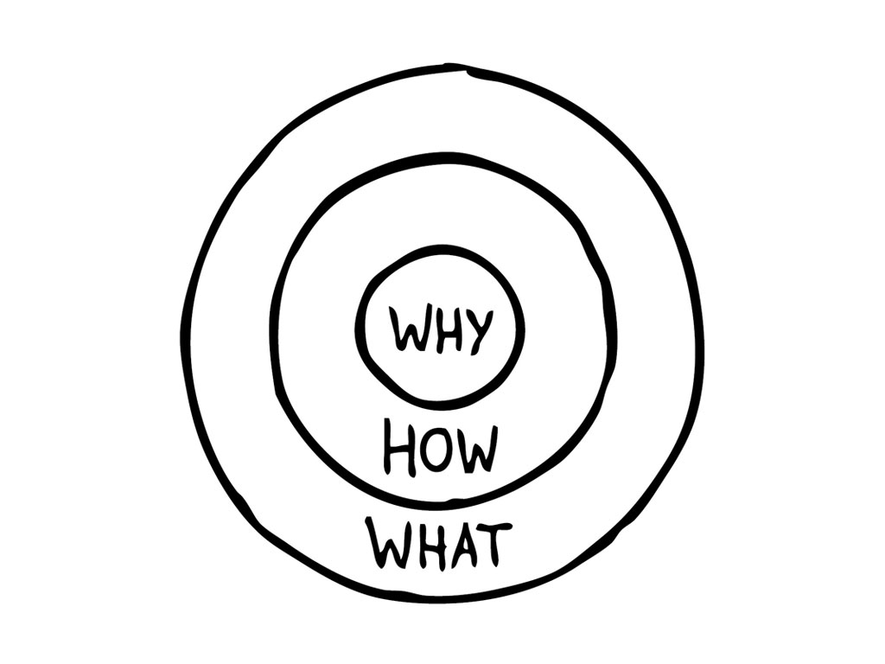

"Les gens n’achètent pas ce que vous faites mais POURQUOI vous le faites". Simon Sinek
Pourquoi certaines personnes ou entreprises réussissent là où d’autres échouent? ? Tout passage à l’action commence toujours avec un pourquoi, une raison qui pousse à agir . les grands leaders pensent, communiquent et agissent de la même façon mais d’une manière différente à leurs concurrents, Simon Sinek nous parle comment, il appelle ce principe : Le cercle d’or.
Ce concept se compose de trois cercles concentriques avec le pourquoi au centre, suivi du comment et du quoi.
Trouver Le pourquoi de la chose est un processus de découverte qui consiste à définir un objectif, une cause, une croyance qui donne à nos vies une signification plus profonde et rend le reste secondaire. Le comment est au moyen du pourquoi, pour que l'on réalise ce en quoi on croit. Sans comment, cela reste un voeu pieu. L'innovation devient possible au sein de l'entreprise parce que les gens se sentent en confiance. On prend des risques parce qu'on partage les valeurs. Et finalement, le comment induit Le quoi. Nous avons investi notre temps et notre argent dans tel comment (disons, les ordinateurs), alors les quoi sont la gamme d'ordinateurs machin, nos programmes d'IA….
le“Golden Circle” deviendra finalement un classique dans le monde du Marketing et sera développé en détail
dans son livre: “Start With WHY”
je vous invite à le découvrir vous-même et vous allez découvrir la différence entre les gens ordinaires et les grands leaders